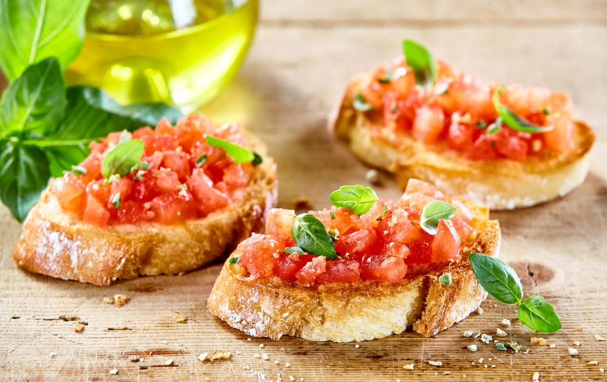

2 ramos grandes de alecrim, ou tomilho, ou orégano, ou sálvia (ou mix dos quatro)
30 gramas de parmesão
30 gramas de nozes
1/2 dente de alho
Sal a gosto
Azeite a gosto
Pimenta-do-reino a gosto
Manjericão a gosto
Modo de Preparo:
Reúna todos os ingredientes;
Coloque os tomates-cereja em uma forma que possa ir ao forno. Cubra com azeite;
Tempere com sal, pimenta, alho laminado e as ervas selecionadas;
Asse em forno preaquecido a 160 ºC por cerca de 20 minutos;
Em um pilão, misture o parmesão, as nozes, o manjericão, o alho, sal e azeite;
Amasse até obter uma pasta;
Coloque os tomatinhos com um pouco do azeite em um prato fundo;
Por cima arrume o queijo burrata;
Finalize com o molho pesto e sirva-se. Bom apetite!
Bruschetta

Ingredientes:
Fatias de pão italiano ou baguete
1/2 xicara de azeite + quanto baste para regar o pão
1 colher (sopa) de orégano
Sal a gosto
2 tomates bem maduros
1 dente de alho
Folhas de majericão
Fatias de mussarela de búfala (opcional)
Modo de Preparo:
Corte os tomates em cubinhos e amasse o dente de alho;
Em um recipiente, junte-os ao azeite, misturando bem;
Adicione o manjericão, o orégano e o sal e mexa novamente. Reserve;
Regue as fatias de pão com azeite a gosto e leve-as ao forno até dourarem.;
Sobre as fatias de pão, coloque as fatias de mussarela de búfala (opcional).;
Coloque por cima de cada uma um pouco da mistura e sirva ainda quentinho;
finalize com folhinhas de manjericão e volte com as torradas ao forno por de 5 a 10 minutos;
Coloque os tomatinhos com um pouco do azeite em um prato fundo.
Pratos Principais
Camarão na Champagne
Ingredientes:
200g de manteiga
1 cebola picada
16 camarões grandes
1 1/2 cálice de conhaque
4 maçãs verdes em bolinhas
2 taças de champagne
2 xícaras (chá) de creme de leite
150g de queijo parmesão ralado
Sal e pimenta do reino a gosto
4 xícaras (chá) de arroz branco pronto
Modo de Preparo:
Numa panela, refogue a cebola na manteiga;
Junte os camarões, acerte o sal e a pimenta;
Tlambe com o conhaque e junte as bolinhas de maçã;
Junte o champagne e deixe por alguns minutos;
Acrescente o queijo parmesão;
Retire os camarões e a maçã do molho;
Misture o arroz ao molho;
Sirva em pratos decorados com camarão e as maçãs;
Para decorar o prato faça um pesto de manjerião e curcuma.
Lagosta à Thermidor
Ingredientes:
3 lagostas (350g de carne)
2 colheres (sopa) de manteiga
3 colheres (sopa) de farinha de trigo
2 xícaras (chá) de Leite Líquido NINHO® Forti+ Integral
4 colheres (sopa) de vinho branco seco
200 g de champignons em conserva
4 gemas
1 pitada de pimenta-do-reino branca moída
meia colher (sopa) de sal
200 g de queijo prato ralado
1 lata de NESTLÉ® Creme de Leite
Modo de Preparo:
Em uma panela, cozinhe as lagostas em água fervente com sal por aproximadamente 15 minutos;
Escorra-as, abra-as, retire toda a carne e corte em pedaços. Reserve;
Em uma panela, aqueça a manteiga e doure a farinha de trigo;
Junte aos poucos o Leite NINHO e o vinho branco, mexendo sempre para não formar grumos;
Acrescente os champignons e deixe o molho tomar consistência;
Desligue o fogo e adicione as gemas, a pimenta, o sal, metade do queijo e o NESTLÉ Creme de Leite, misturando bem após cada adição;
Em um recipiente refratário untado com manteiga, disponha camadas alternadas de lagosta e creme;
Polvilhe o restante do queijo ralado sobre a última camada de Creme e leve ao forno médio-alto (200°C), preaquecido, por cerca de 15 minutos para gratinar. Sirva a seguir;
Sobremesas
Merengue de Morango
Ingredientes:
500 gramas de creme de leite fresco (com no mínimo 35% de gordura)
3 colheres de sopa de açúcar
400 gramas de morangos
250 gramas de suspiros
Modo de Preparo:
Reúna todos os ingredientes;
Em uma batedeira, bata em velocidade máxima o creme de leite, com o açúcar até formar chantilly (cerca de 6 minutos). Reserve;
Higienize os morangos, retire as folhas e corte-os em pedaços. Reserve;
Quebre os suspiros grosseiramente e reserve alguns para decorar;
Em um refratário, faça uma camada com o chantilly, cubra com uma camada de morangos cortados e depois uma de suspiro;
Repita o processo até encher o refratário, finalizando com o chantilly;
Decore com morangos, suspiros e sirva. Bom apetite!
Mousse de Limão
Ingredientes:
1 lata de creme de leite
1 lata de leite condensado
½ xícara de chá de suco de limão
Modo de Preparo:
Reúna todos os ingredientes;
Coloque o creme de leite e o leite condensado no liquidificador e bata;
Gradualmente, acrescente o suco de limão;
Quando a mistura começar a ganhar consistência, desligue o liquidificador, transfira-a para um vasilha, leve à geladeira, espere gelar e sirva na sequência;